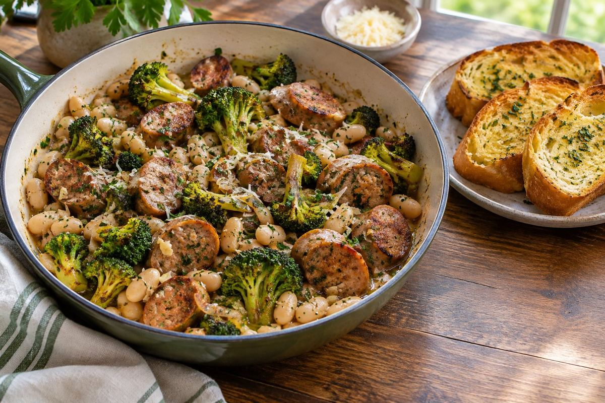

Italian · Dinner · Serves 3 · 30 min total
Italian Sausage, Broccoli and White Bean Skillet with Garlic Bread

Ingredient amounts are estimates when scaled. Original recipe and AnyList import remain unchanged.
Ingredients
- 1 lb mild Italian pork sausage, casings removed
- 12 oz broccoli, cut into small florets
- 2 cans (15 oz each) white beans, drained and rinsed
- 4 garlic cloves, minced, divided
- ½ cup chicken broth, plus more as needed
- 1 Tbsp olive oil
- ½ tsp dried oregano
- 1 lemon, zested and juiced
- ⅓ cup grated Parmesan
- Salt and black pepper, to taste
- ½ large baguette, split lengthwise
- 2 Tbsp softened butter
- Red pepper flakes, optional at the table
Instructions
- Heat oven to 400°F. Mix butter with 1 minced garlic clove and spread on split baguette. Bake on a sheet pan 8–10 minutes until golden; slice.
- Meanwhile, heat olive oil in a large skillet over medium-high heat. Add sausage and break into bite-size pieces. Cook 7–9 minutes until browned and cooked through to 160°F.
- Add remaining garlic and oregano; stir 30 seconds. Add broccoli and broth. Cover and simmer 4–6 minutes until broccoli is just tender.
- Stir in beans and heat gently 3–4 minutes. Mash a few beans into the broth for a light sauce; add a splash of broth if dry. Remove from heat and stir in Parmesan, lemon zest and 1 Tbsp lemon juice. Taste before adding more lemon, salt or pepper. Serve with garlic bread and optional pepper flakes.